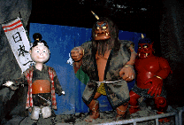

鬼が島/香川県高松市
伝説の鬼が島は高松にあった！というわけで高松港から船で20分、鬼が島こと女木島にやってきた。
港近くには鬼の資料館や良く解らないがなぜかモアイ像などがおかれており珍スポ魂がいやが上にも燃え上がってくる。で、港からバスで鬼の洞窟へ。洞窟は全長450メートル、面積4000平米というスケール。しかし実際に行ってみると、期待外れのチンケなところだった。「ハイテクを駆使した」と謳われる鬼ロボットは動きも悪く、外人さんがみたら「これが日本のハイテクですか、ははは」などと鼻でわらわれそう。
ま、取り敢えず洞窟ものだったんで載せてみました（金かえせー）。

1998.12
珍寺大道場 HOME